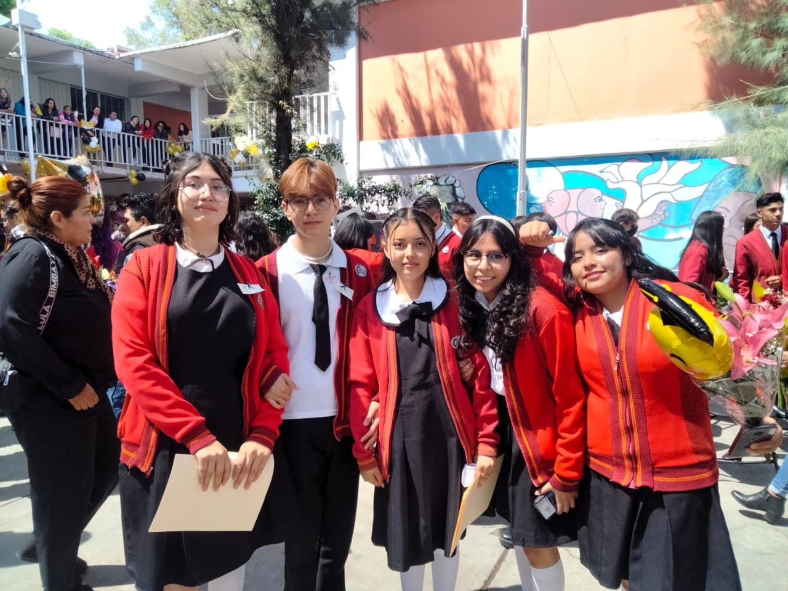

MI PAGINA
Mi nombre es Leymi Jimena Torres Perez,aun que me gusta mas que me digan Leymi naci el 12 de Marzo del 2009 en la Cuidad de Mexico,Mis padres se llaman Jesus y Lucia, al igual que tengo un hermano llamado Gerardo que es mayor que yo.
A los 4 entre al kinder y lo que recuerdo de ello era que era muy divertido pues jugaba mucho pero tambien aprendia bastante y tambien ahi conoci a una de mis amigas que hasta la fecha aun lo es, y a los 6 años entre a la primaria "Jose Maria Morelos Y Pavon", donde descubri que me gustaba mucho la escuela,lo mismo ocurrio en segundo, tercer y cuatro año de primaria era una niña muy responsable y por ello lograba obtener reconococimientos de primer lugar en promedio, en quinto año ocurrio la pandemia por lo que tuve que terminar mi primaria en linea.
A los 12 entre a secundaria y como la pandemia habia acabado pude ir presencialmente a la escuela, el primer año de secundaria fue muy lindo pues ahi conoci a mi amiga Alison, que de hecho tambien va en Voca 3,el segundo año de secundaria fue muy bueno pues conoci a mas personas que hoy en dia son muy importantes para mi, y por ultimo el tercer año fue el mejor para mi tanto en mi vida escolar como personal, pues en la escuela habia logrado entrar a la escolta como abanderada y disfrutaba mucho los ensayos por que mis amigos tambien estaban en la escolta,aun que tambien era un año de mucha presion pues diariamente tenia que estudia para el examen COMIPEMS,no tuve fiesta de XV años pues nunca fue algoq que me interesara a mi, tambien en ese año conoci a Mariana, Christian y Hamiel que son mis mejores amigos con los cuales tenemos miles de recuerdos de todo lo que haciamos y por ultimo a finales de junio de 2024 sali de secundaria.

En agosto publicaron los resultados del COMIPEMS y quede en mi primera opcion Voca 3 por lo que estaba muy feliz, el primer semestre fue muy lindo, los maestros eran muy buenos y la escuela me parecio muy bonita al igual que conoci a personas increibles como Sofia, Miriam y Quetzalli, en este segundo semestre las cosas han sido un poco mas pesadas pero ha sido un semestre bastante bueno pues he aprendido muchas cosas y disfrutado mucho con mis amigos.
Ahora tengo 16 y estoy cursando el segundo semestre en la vocacional, me gusta mucho leer libros de romance o novelas ese es mi hoobie favorito, tambien me gusta mucho escuchar musica de humbe o morat y espero poder ir a alguno de sus conciertos pronto,salir con mis amigos es otra cosa que disfruto mucho, no tengo mascotas, en un futuro me gustaria viajar a Canada y por el momento espero seguir siendo una buena alumna y esforzarme mucho para que mis papas esten orgullosos de mi.
MI CANCION FAVORITA